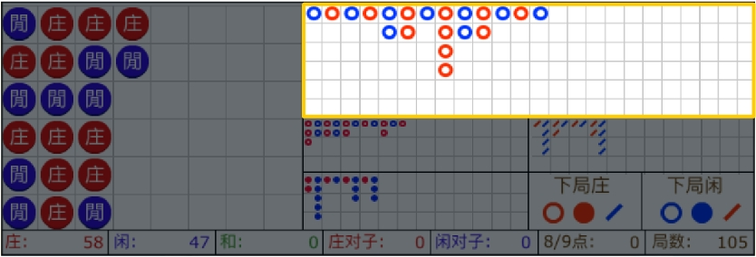
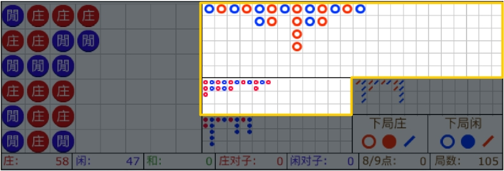
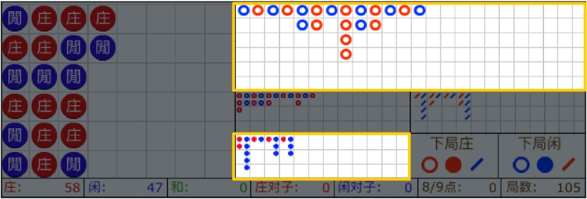
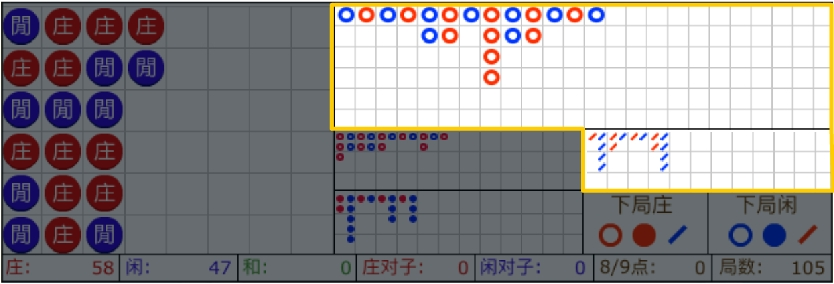
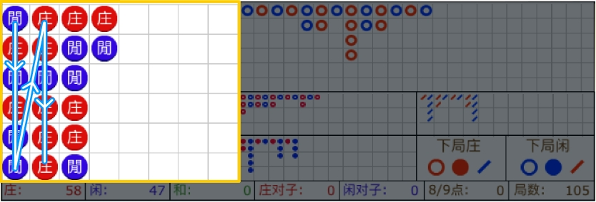
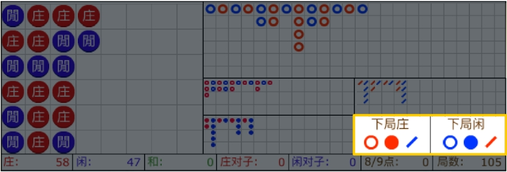

大路是最常见，并且最受玩家欢迎的一种记录形式。
玩家可以通过大路来分析游戏的趋势，并且还可以根据该趋势进行下注。
大路按照庄一列、闲一列的形式换列排列。出现和时，不会换列，并且会用一条绿色斜线(或圆，上图为隐藏模式)进行表示。
图标说明：
分别表示庄/闲/和未能获胜局
 分别表示庄/闲/和获胜局
分别表示庄/闲/和获胜局
左上方红点表示庄对/ 右下方蓝点表示闲对/
表示同时出现庄对与闲对

大眼仔路是为了分析大路的规则性而产生的记录形式。
大眼仔路的起始点是以大路的第2列第2行开始分析记录(如果该位置没有结果，则以第3列第1行开始分析)。
在大眼仔路中的
颜色与庄、闲无关，只表示大路的规则性。
(
- 表示有规则；
- 表示无规则 )
大眼仔的路记录规则：
1) 在大路中出现直落的情况，以最后结果为标准，水平方向与前列相比较。如整齐，则表示有规则；反之，无规则。（但，如果有2行或2行以上不整齐时，则表示有规则）
2) 在大路中出现换列的情况，以最后结果为标准，比较前列与前2列。如整齐，则表示有规则；反之，无规则。

小路是为了分析大路的规则性而产生的记录形式。
小路的起始点是以大路的第3列第2行开始分析记录(如果该位置没有结果，则以第4列第1行开始分析)。
在小路中的颜色与庄、闲无关，只表示大路的规则性。
(
- 表示有规则； - 表示无规则)
小路的记录规则：
1) 在大路中出现直落的情况，以最后结果为标准，水平方向与前2列相比较。如整齐，则表示有规则；反之，无规则。（但，如果有2行或2行以上不整齐时，则表示有规则）
2) 在大路中出现换列的情况，以最后结果为标准，比较前列与前3列。如整齐，则表示有规则；反之，无规则。

曱甴路是为了分析大路的规则性而产生的记录形式。曱甴路的起始点是以大路的第4列第2行开始分析记录(如果该位置没有结果，则以第5列第1行开始分析)。
在曱甴路中的颜色与庄、闲无关，只表示大路的规则性。( - 表示有规则； - 表示无规则)
- 表示无规则)
曱甴路的记录规则：
1) 在大路中出现直落的情况，以最后结果为标准，水平方向与前3列相比较。如整齐，则表示有规则；反之，无规则。（但，如果有2行或2行以上不整齐时，则表示有规则）
2) 在大路中出现换列的情况，以最后结果为标准，比较前列与前4列。如整齐，则表示有规则；反之，无规则。

珠牌路是将游戏结果以每列6格，依次进行排列的记录形式。 其记录方向为从上至下、从左至右。

预测值所表示的是在下一局出现庄或闲时，
大眼仔路、小路、曱甴路中，各自所显示的规则性。
(注) 其颜色与庄、闲无关